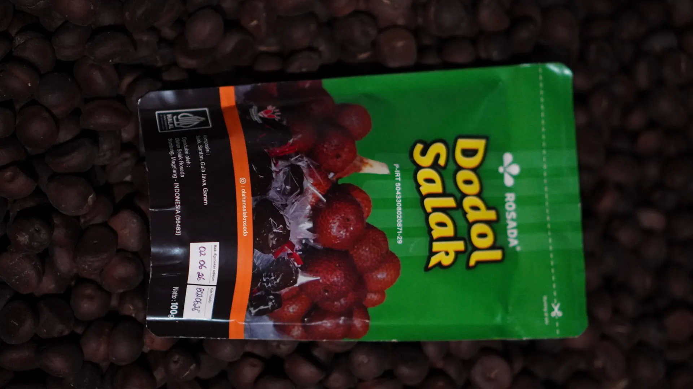
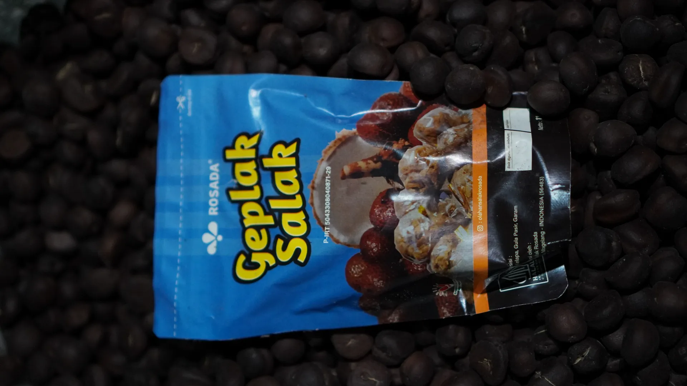
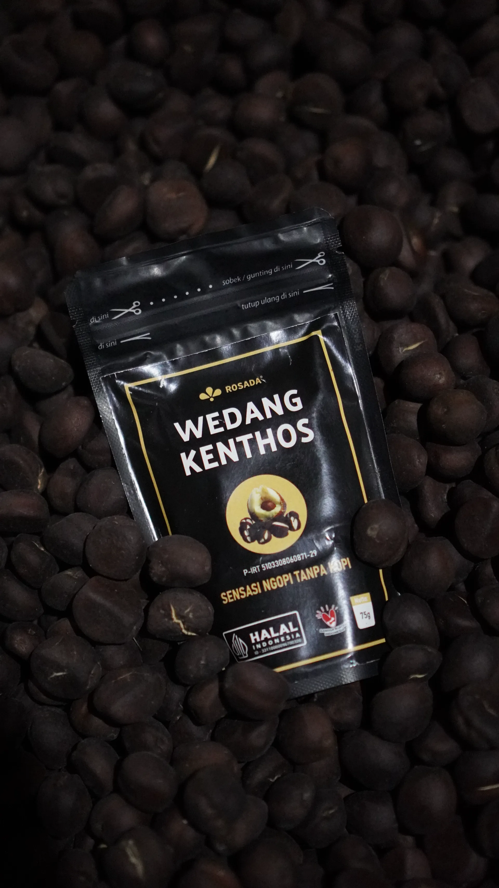
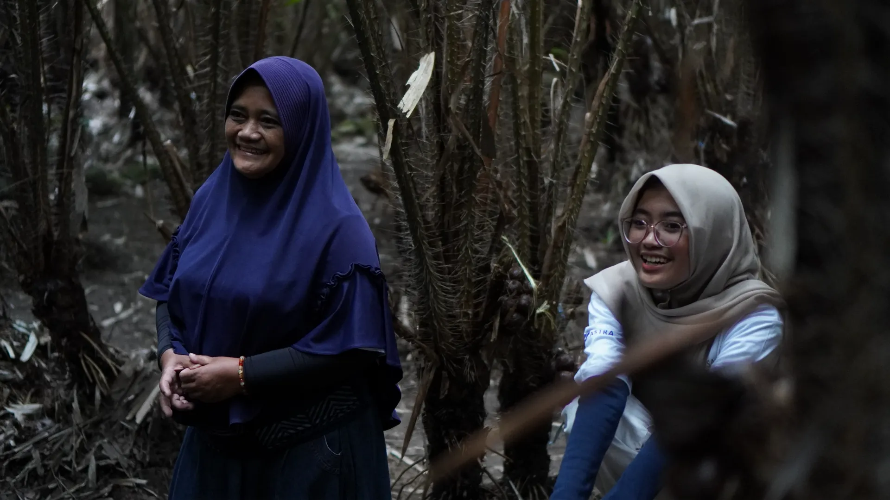
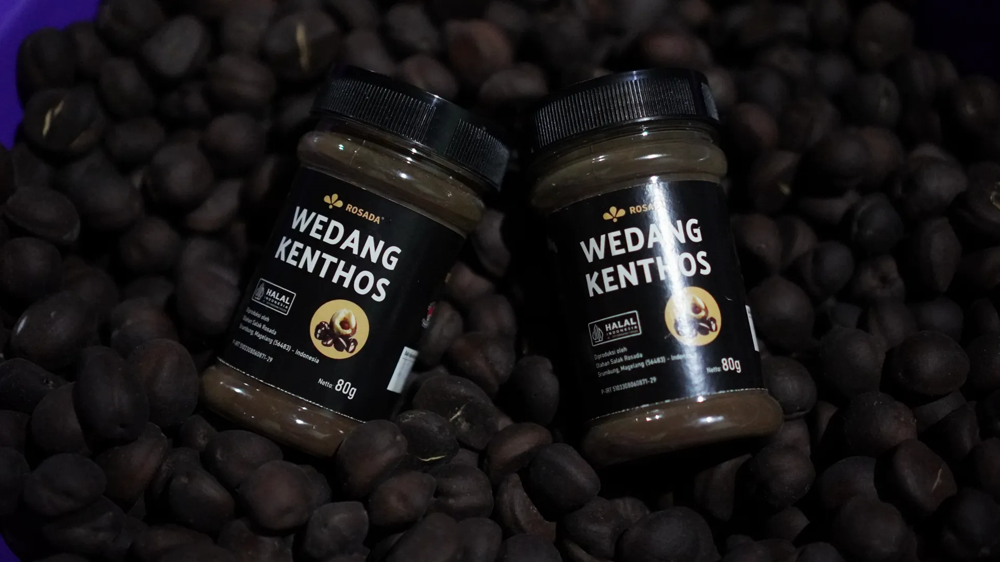

Warisan Merapi,
Destinasi Edukasi
Agribisnis Berkelanjutan.
Menyajikan pengalaman wisata yang memadukan keindahan alam lereng Merapi dengan edukasi sistem pertanian modern yang ramah lingkungan. Untuk pelajar, keluarga, komunitas, hingga instansi.
Lebih dari
Sekadar Wisata
Di Agrowisata Ngudi Luhur, pengunjung tidak hanya melihat — mereka merasakan langsung bagaimana salak Nglumut terbaik di Indonesia ditanam, dirawat, dipanen, dan diolah menjadi produk bernilai tinggi.
Dengan latar Gunung Merapi yang megah dan udara pegunungan yang segar, setiap kunjungan menjadi pengalaman yang membekas — baik untuk wisatawan keluarga maupun tim dari instansi yang ingin melakukan studi banding agribisnis modern.
Dikelola sepenuhnya oleh Karang Taruna setempat, agrowisata ini adalah bukti nyata bahwa pemuda desa mampu menjadi penggerak ekonomi pariwisata berkelanjutan.
Pilih Pengalaman
yang Tepat untuk Anda
Sekolah & Kampus
Paket Edukasi Budidaya
Belajar teknik budidaya Salak Nglumut kualitas ekspor, tur packing house, edukasi circular economy dan pengolahan limbah pertanian.
- Tur lahan budidaya
- Packing house & QC tour
- Sesi tanya jawab petani
- Circular economy
Keluarga & Komunitas
Wisata Petik Buah
Pengalaman petik buah langsung di sentra salak terbaik Indonesia. Sesi foto di hamparan kebun berlatar Merapi yang ikonik.
- Petik salak langsung
- Edukasi varietas Nglumut
- Foto kebun berlatar Merapi
- Kunjungan rumah produksi
Instansi & BUMN
Studi Banding (B2B)
Presentasi resmi profil Gapoktan, tur lapangan lengkap, diskusi interaktif bersama pengelola, dan fasilitas pendopo kapasitas besar.
- Presentasi profil resmi
- Tur lapangan lengkap
- Sesi diskusi formal
- Dokumentasi kunjungan
Lengkap untuk
Semua Jenis Kunjungan
Dari sesi formal di pendopo kapasitas besar, menginap di rumah tradisional Jawa, hingga petualangan outdoor di alam lereng Merapi.

Area Pertemuan
Pendopo 1–4 · Kapasitas Besar

Area Produksi
Lahan Budidaya & Petik Buah

Area Budaya
Rumah Tradisional (Edustay)

Area Outdoor
Kolam Outbound · Susur Sungai

Spot Foto
Waduk & Sabo Dam · Camping Ground
Mudah Ditemukan,
Layak Dikunjungi
Berlokasi di lereng barat Gunung Merapi, Kecamatan Srumbung — sekitar 30 menit dari Kota Magelang dan 1 jam dari Yogyakarta.
Rencanakan
Kunjungan Anda
Isi form di bawah untuk mengajukan reservasi. Tim Karang Taruna kami akan menghubungi Anda dalam 1×24 jam.
Atau langsung hubungi via WhatsApp →
Chat WhatsApp